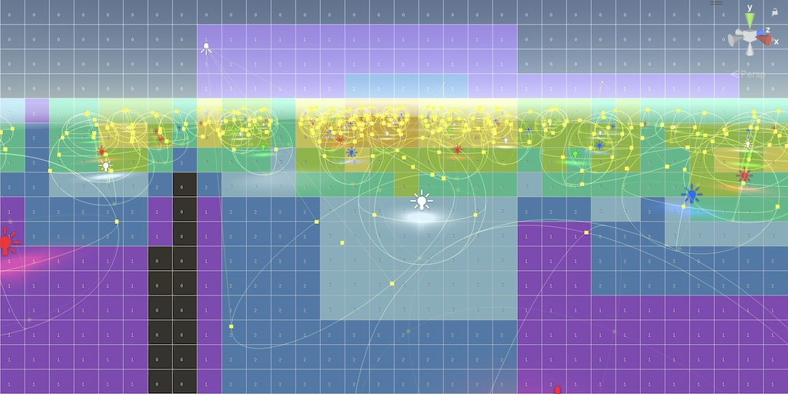
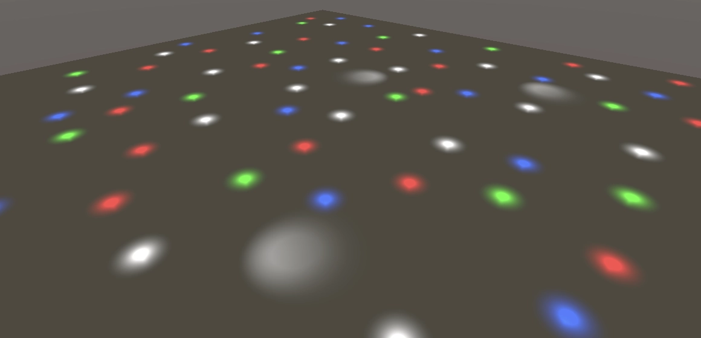
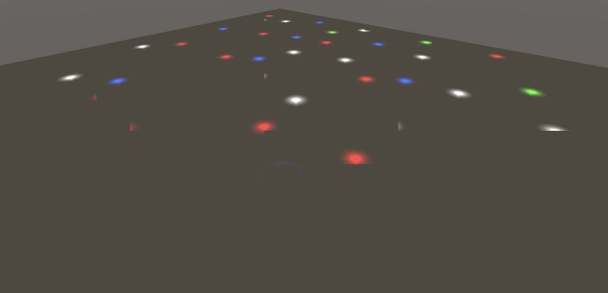
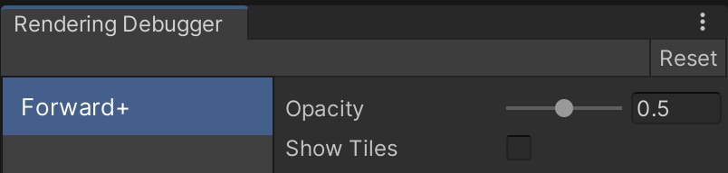
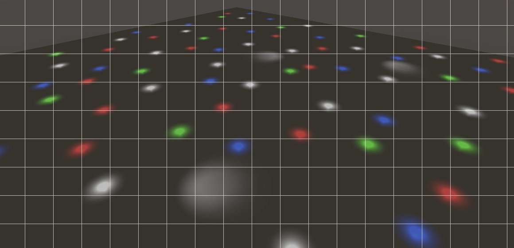
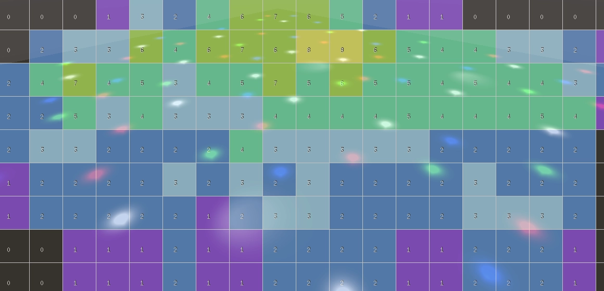

Custom SRP 3.0.0
Simple Tiled Forward+

This tutorial is made with Unity 2022.3.27f1 and follows Custom SRP 2.5.0.
Shadows Bugfix
The first thing we do this time is fix a shadow bug. Bugs happen and in this case it's caused by all shadows moving out of range. Then the shadow buffers aren't set up, which causes an error and rendering of lit geometry will be skipped. To fix this we move the invocations of SetGlobalBuffer from Shadows.RenderDirectionalShadows and Shadows.RenderOtherShadows to Shadows.Render. I only show where they should end up.
buffer.SetGlobalBuffer( directionalShadowCascadesId, directionalShadowCascadesBuffer); buffer.SetGlobalBuffer( directionalShadowMatricesId, directionalShadowMatricesBuffer); buffer.SetGlobalBuffer(otherShadowDataId, otherShadowDataBuffer); buffer.SetGlobalTexture(directionalShadowAtlasId, directionalAtlas); buffer.SetGlobalTexture(otherShadowAtlasId, otherAtlas);
Configuration Class
We're increasing the main version of our project. We take this opportunity to implement a structural change: we move our RP settings to a separate class. Create a serializable CustomRenderPipelineSettings class that contains all the serializable fields of CustomRenderPipelineAsset, including the enum type. As it's a configuration container we make all the fields public.
using UnityEngine;
[System.Serializable]
public class CustomRenderPipelineSettings
{
public CameraBufferSettings cameraBuffer = new()
{
allowHDR = true,
renderScale = 1f,
fxaa = new()
{
fixedThreshold = 0.0833f,
relativeThreshold = 0.166f,
subpixelBlending = 0.75f
}
};
public bool
useSRPBatcher = true,
useLightsPerObject = true;
public ShadowSettings shadows;
public PostFXSettings postFXSettings;
public enum ColorLUTResolution
{ _16 = 16, _32 = 32, _64 = 64 }
public ColorLUTResolution colorLUTResolution = ColorLUTResolution._32;
public Shader cameraRendererShader;
}
Add a serializable field for it to CustomRenderPipelineAsset, above all its other fields.
[SerializeField] CustomRenderPipelineSettings settings;
Migrating Settings
At this point our asset contains duplicate settings: the original ones and those nested in the settings class. To ease migration we won't remove the old ones yet. Instead we will indicate that they are deprecated, by putting the deprecated header above them and adding a tooltip to all fields noting that they have been moved to the settings class.
[Header("Deprecated Settings")]
[SerializeField, Tooltip("Moved to settings.")]
CameraBufferSettings cameraBuffer = new()
{ … };
…
//[Header("Deprecated Settings")]
Next, change CreatePipeline so it passes the settings object to the CustomRenderPipeline constructor instead of the separate fields.
protected override RenderPipeline CreatePipeline()
{
return new CustomRenderPipeline(settings);
}
Besides that we also add code here that copies the old fields to the new settings, if needed. This is the case when either the new settings don't exist yet or when its shader has not yet been set, while the old shader has been set. In that case we construct new settings based on the old.
if ((settings == null || settings.cameraRendererShader == null) &&
cameraRendererShader != null)
{
settings = new CustomRenderPipelineSettings
{
cameraBuffer = cameraBuffer,
useSRPBatcher = useSRPBatcher,
useLightsPerObject = useLightsPerObject,
shadows = shadows,
postFXSettings = postFXSettings,
colorLUTResolution =
(CustomRenderPipelineSettings.ColorLUTResolution)
colorLUTResolution,
cameraRendererShader = cameraRendererShader
};
}
return new CustomRenderPipeline(settings);
Moving on to CustomRenderPipeline, we can replace all its separate fields with a single CustomRenderPipelineSettings field.
//readonly CameraBufferSettings cameraBufferSettings;//readonly bool useLightsPerObject;//readonly ShadowSettings shadowSettings;//readonly PostFXSettings postFXSettings;//readonly int colorLUTResolution;readonly CustomRenderPipelineSettings settings;
Then adjust its constructor method to work with a single settings parameter.
public CustomRenderPipeline(CustomRenderPipelineSettings settings)
{
this.settings = settings;
GraphicsSettings.useScriptableRenderPipelineBatching =
settings.useSRPBatcher;
GraphicsSettings.lightsUseLinearIntensity = true;
InitializeForEditor();
renderer = new(settings.cameraRendererShader);
}
And pass the settings to the camera renderer in Render.
for (int i = 0; i < cameras.Count; i++)
{
renderer.Render(renderGraph, context, cameras[i], settings);
}
Adjust CameraRenderer.Render as well to work with the new parameter. We simply replace the old parameters with variables if they're used more than once, otherwise we directly access the value via the settings.
public void Render(
RenderGraph renderGraph,
ScriptableRenderContext context,
Camera camera,
CustomRenderPipelineSettings settings)
{
CameraBufferSettings bufferSettings = settings.cameraBuffer;
PostFXSettings postFXSettings = settings.postFXSettings;
ShadowSettings shadowSettings = settings.shadows;
bool useLightsPerObject = settings.useLightsPerObject;
…
renderGraph, postFXStack, (int)settings.colorLUTResolution,
…
}
Removal of Deprecated Settings
As we went up a major version we also remove those settings that we deprecated earlier, which are the toggles for dynamic batching and GPU instancing.
//[SerializeField, Tooltip("Dynamic batching is no longer used.")]//bool useDynamicBatching;//[SerializeField, Tooltip("GPU instancing is always enabled.")]//bool useGPUInstancing;
Tiled Forward+
The main reason that we move to a new major version is because we add support for Forward+ rendering. As we'll be using a job to do some of its work, add the Burst and Mathematics packages to the project. In this case I specifically used Burst 1.8.15 and Mathematics 1.2.6.
There are multiple variants of Forward+ and we'll implement it in a very simple way. We use Tiled Forward+ which means that we split the window in screen-space tiles and figure out which lights affect which tiles. When shading we determine the tile a fragment occupies and only apply lighting for the lights that affect it. Compared to our current brute-force method of always applying all other lights to all fragments, this approach has the potential to drastically reduce the amount of lights that are processed per fragment.
Tiles Buffer
To make Tiled Forward+ work we need to keep track of which lights affect which tile. We'll store this information in a new tiles buffer. Add an entry for this buffer to LightResources so we can track its usage.
public readonly ComputeBufferHandle
directionalLightDataBuffer, otherLightDataBuffer, tilesBuffer;
public readonly ShadowResources shadowResources;
public LightResources(
ComputeBufferHandle directionalLightDataBuffer,
ComputeBufferHandle otherLightDataBuffer,
ComputeBufferHandle tilesBuffer,
ShadowResources shadowResources)
{
this.directionalLightDataBuffer = directionalLightDataBuffer;
this.otherLightDataBuffer = otherLightDataBuffer;
this.tilesBuffer = tilesBuffer;
this.shadowResources = shadowResources;
}
Indicate that we use this buffer in GeometryPass.Record, but only if it is valid. If we end up using the lights-per-object approach we won't be using Forward+ and also won't create the buffer.
builder.ReadComputeBuffer(lightData.otherLightDataBuffer);
if (lightData.tilesBuffer.IsValid())
{
builder.ReadComputeBuffer(lightData.tilesBuffer);
}
builder.ReadTexture(lightData.shadowResources.directionalAtlas);
Add a field for the tiles buffer to LightingPass.
ComputeBufferHandle directionalLightDataBuffer, otherLightDataBuffer, tilesBuffer;
We use a simple buffer layout, storing a list of all tiles. Each tile consists of a header that contains the amount of lights that affect it, followed by a list containing all the indices of those lights. We simply reserve space for the maximum amount of lights that we allow per tile, so the data for all tiles is the same size. Supporting variable lists per tile is more memory efficient but also more complex, requiring an additional lookup table, so we won't do that at this time.
Let's set the tile data size to 32 integers. So that's one for the header plus room for 31 light indices. Add constants for these values. Let's also increase the maximum other light count to 128 so we can test things with many lights. You could set it higher if you want. And we also have to pick a screen-space size for the tiles. Once again we could make this variable, but for now we simple use a fixed size of 64×64 pixels. That's a reasonable starting size which is also easy to visually debug.
const int maxDirectionalLightCount = 4, maxOtherLightCount = 128, maxLightsPerTile = 31, tileDataSize = maxLightsPerTile + 1, tileScreenPixelSize = 64;
The amount of tiles that we end up with depends on the window size, which we determine while rendering. We make this available via a TileCount property, which we initially set to 1.
int TileCount => 1;
Create the tiles buffer for writing in Record, unless we're using the lights-per-object approach.
if (!useLightsPerObject)
{
pass.tilesBuffer = builder.WriteComputeBuffer(
renderGraph.CreateComputeBuffer(new ComputeBufferDesc
{
name = "Forward+ Tiles",
count = pass.TileCount * tileDataSize,
stride = 4
}));
}
builder.SetRenderFunc<LightingPass>(
static (pass, context) => pass.Render(context));
builder.AllowPassCulling(false);
return new LightResources(
pass.directionalLightDataBuffer,
pass.otherLightDataBuffer,
pass.tilesBuffer,
pass.shadows.GetResources(renderGraph, builder));
Screen Tiles
To work with the screen-space tiles we have to know both how many there are and how to convert from screen UV to tile coordinates, in both dimensions. Add 2D fields for this data. Then the tile count is equal to the product of the amount of tiles in both dimensions.
Vector2 screenUVToTileCoordinates; Vector2Int tileCount; int TileCount => tileCount.x * tileCount.y;
To determine these values we have to add a parameter for the attachment size to Setup. If we're using Forward+ rendering determine the tile count and coordinate conversion factors, before setting up the lights. We have to round up the tile count because the size of the buffer that we're rendering to might not be exactly divisible by the tile size. If so the tiles at the maximum edges will end up covering a smaller area than the other tiles.
void Setup(
CullingResults cullingResults,
Vector2Int attachmentSize,
ShadowSettings shadowSettings,
bool useLightsPerObject,
int renderingLayerMask)
{
this.cullingResults = cullingResults;
this.useLightsPerObject = useLightsPerObject;
shadows.Setup(cullingResults, shadowSettings);
if (!useLightsPerObject)
{
screenUVToTileCoordinates.x =
attachmentSize.x / (float)tileScreenPixelSize;
screenUVToTileCoordinates.y =
attachmentSize.y / (float)tileScreenPixelSize;
tileCount.x = Mathf.CeilToInt(screenUVToTileCoordinates.x);
tileCount.y = Mathf.CeilToInt(screenUVToTileCoordinates.y);
}
SetupLights(renderingLayerMask);
}
Add the required parameter to Record as well to pass it on to Setup.
public static LightResources Record(
RenderGraph renderGraph,
CullingResults cullingResults,
Vector2Int attachmentSize,
ShadowSettings shadowSettings,
bool useLightsPerObject,
int renderingLayerMask)
{
using RenderGraphBuilder builder = renderGraph.AddRenderPass(
sampler.name, out LightingPass pass, sampler);
pass.Setup(cullingResults, attachmentSize, shadowSettings,
useLightsPerObject, renderingLayerMask);
…
}
And provide it in CameraRenderer.Render.
LightResources lightResources = LightingPass.Record( renderGraph, cullingResults, bufferSize, shadowSettings, useLightsPerObject, cameraSettings.maskLights ? cameraSettings.renderingLayerMask : -1);
Light Bounds
To know whether a light affects a tile we must figure out what area of the screen it covers. We'll do this by collecting the screen-space UV bounds of all visible lights in a NativeArray<float4> and then running a job that compares those bounds with the tile bounds. So we'll be using the Unity.Jobs and Unity.Mathematics namespaces in LightingPass.
using Unity.Collections; using Unity.Jobs; using Unity.Mathematics; … using static Unity.Mathematics.math;
Add a field for the requires light bounds array.
NativeArray<float4> lightBounds;
Create it in Setup if needed, before setting up the lights.
if (!useLightsPerObject)
{
lightBounds = new NativeArray<float4>(
maxOtherLightCount, Allocator.TempJob,
NativeArrayOptions.UninitializedMemory);
screenUVToTileCoordinates.x =
attachmentSize.x / (float)tileScreenPixelSize;
…
}
We don't have to calculate the bounds ourselves, we can use the screenRect field of VisibleLight. It contains the screen-space UV rectangle used by Unity to determine whether the light is visible. This is a conservative rectangle based on the world-space bounding box of the light, so it isn't optimally tight, but good enough to get simple Forward+ working. We could calculate better bounds ourselves, but that would require more work and is more complex. Ideally Unity would switch to a better approach themselves instead of us (and URP) essentially having to do duplicate work.
Create a separate method to do this if needed, given a light index and a reference to its data. Store the XY bounds minima and maxima in the float4.
void SetupForwardPlus(int lightIndex, ref VisibleLight visibleLight)
{
if (!useLightsPerObject)
{
Rect r = visibleLight.screenRect;
lightBounds[lightIndex] = float4(r.xMin, r.yMin, r.xMax, r.yMax);
}
}
Invoke this method in SetupLights for point and spot lights.
if (otherLightCount < maxOtherLightCount)
{
newIndex = otherLightCount;
SetupForwardPlus(otherLightCount, ref visibleLight);
otherLightData[otherLightCount++] =
OtherLightData.CreatePointLight(
ref visibleLight, light,
shadows.ReserveOtherShadows(light, i));
}
break;
case LightType.Spot:
if (otherLightCount < maxOtherLightCount)
{
newIndex = otherLightCount;
SetupForwardPlus(otherLightCount, ref visibleLight);
otherLightData[otherLightCount++] =
OtherLightData.CreateSpotLight(
ref visibleLight, light,
shadows.ReserveOtherShadows(light, i));
}
Tiles Job
Now that we have the light bounds we can compare them with the tile bounds. Create a Burst job for this, named ForwardPlusTilesJob, placed in the Lighting folder under Passes.
The job iterates over the screen tiles in parallel. It reads from the light bounds array and writes to sections of the tile data array. It needs to know the other light count, the tile size in screen UV space, the maximum amount of lights per tile, how many tiles there are per screen row, and the data size for a single tile.
The Execute method works on a single tile, given its index. We make the tile indices start at the bottom left of the screen, going up row by row. Use this to calculate the appropriate tile bounds, storing them in a float4 just like the light bounds.
Then loop through all lights and check if the bounds overlap. If so add the light index to the tile's list and stop if the maximum amount of lights is reached. When done store the amount of overlapping lights in the tile's header.
using Unity.Burst;
using Unity.Collections;
using Unity.Jobs;
using Unity.Mathematics;
using static Unity.Mathematics.math;
[BurstCompile(FloatPrecision.Standard, FloatMode.Fast)]
public struct ForwardPlusTilesJob : IJobFor
{
[ReadOnly]
public NativeArray<float4> lightBounds;
[WriteOnly, NativeDisableParallelForRestriction]
public NativeArray<int> tileData;
public int otherLightCount;
public float2 tileScreenUVSize;
public int maxLightsPerTile;
public int tilesPerRow;
public int tileDataSize;
public void Execute(int tileIndex)
{
int y = tileIndex / tilesPerRow;
int x = tileIndex - y * tilesPerRow;
var bounds = float4(x, y, x + 1, y + 1) * tileScreenUVSize.xyxy;
int headerIndex = tileIndex * tileDataSize;
int dataIndex = headerIndex;
int lightsInTileCount = 0;
for (int i = 0; i < otherLightCount; i++)
{
float4 b = lightBounds[i];
if (all(float4(b.xy, bounds.xy) <= float4(bounds.zw, b.zw)))
{
tileData[++dataIndex] = i;
if (++lightsInTileCount >= maxLightsPerTile)
{
break;
}
}
}
tileData[headerIndex] = lightsInTileCount;
}
}
Add a field for the tile data array and a job handle to LightingPass.
NativeArray<int> tileData; JobHandle forwardPlusJobHandle;
Schedule the job at the end of SetupLights if we're using Forward+ and let's batch it per row.
if (useLightsPerObject)
{
for (; i < indexMap.Length; i++)
{
indexMap[i] = -1;
}
cullingResults.SetLightIndexMap(indexMap);
indexMap.Dispose();
}
else {
tileData = new NativeArray<int>(
TileCount * tileDataSize, Allocator.TempJob);
forwardPlusJobHandle = new ForwardPlusTilesJob
{
lightBounds = lightBounds,
tileData = tileData,
otherLightCount = otherLightCount,
tileScreenUVSize = float2(
1f / screenUVToTileCoordinates.x,
1f / screenUVToTileCoordinates.y),
maxLightsPerTile = maxLightsPerTile,
tilesPerRow = tileCount.x,
tileDataSize = tileDataSize
}.ScheduleParallel(TileCount, tileCount.x, default);
}
We do not immediately wait on the completion of this job. We leave it up to Unity when to execute it. We only need its results at the end of Render and the render graph might schedule other jobs in between as well. If we use the lights-per-object approach then we can still execute and clear the buffer and return as before, but otherwise complete the job, execute and clear the buffer, and dispose the light bounds and tile data native arrays.
shadows.Render(context);
if (useLightsPerObject)
{
context.renderContext.ExecuteCommandBuffer(buffer);
buffer.Clear();
return;
}
forwardPlusJobHandle.Complete();
context.renderContext.ExecuteCommandBuffer(buffer);
buffer.Clear();
lightBounds.Dispose();
tileData.Dispose();
GPU Data
To access the tile data on the GPU we introduce two new shader properties, one for the tiles and one for the tile settings.
otherLightDataId = Shader.PropertyToID("_OtherLightData"),
tilesId = Shader.PropertyToID("_ForwardPlusTiles"),
tileSettingsId = Shader.PropertyToID("_ForwardPlusTileSettings");
Set both at the end of Render. The settings are a 4D vector, its first two components containing the screen UV to tile coordinates conversion factors, followed by the tile row length and tile data size, both set as raw integer data.
forwardPlusJobHandle.Complete(); buffer.SetBufferData( tilesBuffer, tileData, 0, 0, tileData.Length); buffer.SetGlobalBuffer(tilesId, tilesBuffer); buffer.SetGlobalVector(tileSettingsId, new Vector4( screenUVToTileCoordinates.x, screenUVToTileCoordinates.y, tileCount.x.ReinterpretAsFloat(), tileDataSize.ReinterpretAsFloat())); context.renderContext.ExecuteCommandBuffer(buffer); buffer.Clear(); lightBounds.Dispose(); tileData.Dispose();
Shader
To facilitate Forward+ rendering we add a new ForwardPlus.hlsl include file in the ShaderLibrary folder. We declare the new shader property data and also define a ForwardPlusTile struct along with a GetForwardPlusTile function that returns such a tile given screen-space UV coordinates.
The ForwardPlusTile struct contains integer fields for its 2D coordinates and its tile index. Also give it functions to get other useful data. We need to get the tile data size, the tile's header index, its light count, the index for its first light, the index for its last light, and finally a function to get a light's global index based on its local tile list index.
#ifndef CUSTOM_FORWARD_PLUS_INCLUDED
#define CUSTOM_FORWARD_PLUS_INCLUDED
// xy: Screen UV to tile coordinates.
// z: Tiles per row, as integer.
// w: Tile data size, as integer.
float4 _ForwardPlusTileSettings;
StructuredBuffer<int> _ForwardPlusTiles;
struct ForwardPlusTile
{
int2 coordinates;
int index;
int GetTileDataSize()
{
return asint(_ForwardPlusTileSettings.w);
}
int GetHeaderIndex()
{
return index * GetTileDataSize();
}
int GetLightCount()
{
return _ForwardPlusTiles[GetHeaderIndex()];
}
int GetFirstLightIndexInTile()
{
return GetHeaderIndex() + 1;
}
int GetLastLightIndexInTile()
{
return GetHeaderIndex() + GetLightCount();
}
int GetLightIndex(int lightIndexInTile)
{
return _ForwardPlusTiles[lightIndexInTile];
}
};
ForwardPlusTile GetForwardPlusTile(float2 screenUV)
{
ForwardPlusTile tile;
tile.coordinates = int2(screenUV * _ForwardPlusTileSettings.xy);
tile.index = tile.coordinates.y * asint(_ForwardPlusTileSettings.z) +
tile.coordinates.x;
return tile;
}
#endif
Let's include this file in Common.hlsl, after including Fragment.hlsl.
#include "Fragment.hlsl" #include "ForwardPlus.hlsl"
Adjust the GetLighting function in Lighting.hlsl that loops through the other light list when lights-per-object aren't used so it uses the Forward+ approach. It needs to know the screen-space UV coordinates for this, so add the fragment as a parameter to the function.
float3 GetLighting(Fragment fragment, Surface surfaceWS, BRDF brdf, GI gi)
{
…
#if defined(_LIGHTS_PER_OBJECT)
…
#else
ForwardPlusTile tile = GetForwardPlusTile(fragment.screenUV);
int lastLightIndex = tile.GetLastLightIndexInTile();
for (int j = tile.GetFirstLightIndexInTile(); j <= lastLightIndex; j++)
{
Light light = GetOtherLight(
tile.GetLightIndex(j), surfaceWS, shadowData);
if (RenderingLayersOverlap(surfaceWS, light))
{
color += GetLighting(surfaceWS, brdf, light);
}
}
#endif
return color;
}
Finally, add the fragment as an argument in LitPassFragment in LitPass.hlsl.
float3 color = GetLighting(config.fragment, surface, brdf, gi);
Tiled Forward+ should now be fully functional. Make sure that you have disabled the Use Lights Per Object option in our RP asset. I have created a Many Lights scene to demonstrate it, containing a single plane with many point lights and a few spotlights illuminating it.

You can verify that the lights are indeed tiled by for example temporarily adding two to the first light index when looping through the other lights. This causes the first two lights to be skipped per tile.

This should work in most cases, except when we're using a graphics API with UV starting at the top and not rendering to an intermediate texture. Besides the tile order being wrong in that case, it also goes wrong when a reduced and moved viewport is in use. Rather than trying to fix that case we simply force an intermediate buffer when we use Forward+ rendering, in CameraRenderer.Render.
bool useIntermediateBuffer = useScaledRendering || useColorTexture || useDepthTexture || hasActivePostFX || !useLightsPerObject;
Rendering Debugger
It can be useful to visually inspect the tiles to get an idea of the benefit we get out of using a Forward+ approach. So we'll add support for debug visualizations to our RP.
Debug Shader
Create a CameraDebuggerPasses.hlsl asset by duplicating and renaming CameraRendererPasses.hlsl. Replace its two copy fragment functions with a single ForwardPlusTilesPassFragment function that initially returns a solid white color. Add a _DebugOpacity configuration option and use that to control the opacity of the debug overlay. Also include Packages/com.unity.render-pipelines.core/ShaderLibrary/Debug.hlsl, which we'll make use of later.
#ifndef CAMERA_DEBUGGER_PASSES_INCLUDED
#define CAMERA_DEBUGGER_PASSES_INCLUDED
#include "Packages/com.unity.render-pipelines.core/ShaderLibrary/Debug.hlsl"
float _DebugOpacity;
struct Varyings
{
float4 positionCS_SS : SV_POSITION;
float2 screenUV : VAR_SCREEN_UV;
};
Varyings DefaultPassVertex(uint vertexID : SV_VertexID)
{
Varyings output;
output.positionCS_SS = float4(
vertexID <= 1 ? -1.0 : 3.0,
vertexID == 1 ? 3.0 : -1.0,
0.0, 1.0
);
output.screenUV = float2(
vertexID <= 1 ? 0.0 : 2.0,
vertexID == 1 ? 2.0 : 0.0
);
if (_ProjectionParams.x < 0.0)
{
output.screenUV.y = 1.0 - output.screenUV.y;
}
return output;
}
float4 ForwardPlusTilesPassFragment(Varyings input) : SV_TARGET
{
return float4(1.0, 1.0, 1.0, _DebugOpacity);
}
#endif
Also duplicate CameraRenderer.shader and rename it to CameraDebugger.shader and adjust it so it has a single pass for Forward+ Tiles.
Shader "Hidden/Custom RP/Camera Debugger"
{
SubShader
{
Cull Off
ZTest Always
ZWrite Off
HLSLINCLUDE
#include "../ShaderLibrary/Common.hlsl"
#include "CameraDebuggerPasses.hlsl"
ENDHLSL
Pass
{
Name "Forward+ Tiles"
Blend SrcAlpha OneMinusSrcAlpha
HLSLPROGRAM
#pragma target 4.5
#pragma vertex DefaultPassVertex
#pragma fragment ForwardPlusTilesPassFragment
ENDHLSL
}
}
}
Add a configuration field for the camera debugger shader to CustomRenderPipelineSettings and then hook up the shader to our asset via the inspector.
public Shader cameraRendererShader, cameraDebuggerShader;
Debug Class
To control the debug visualization introduce a static CameraDebugger class. It has to keep track of its material, whether the tiles should be shown, and its opacity, which we'll set to 0.5 by default. Give it a public IsActive property which is based on whether the tiles should be shown and the opacity being greater than zero.
It needs three public methods. First an Initialize method with a shader parameter that creates the material. Second a Cleanup method that gets rid of the material. Third a Render method that draws our full-screen pass given a RenderGraphContext. Make these methods conditionally compile only for the editor and development builds.
using System.Diagnostics;
using UnityEngine;
using UnityEngine.Experimental.Rendering.RenderGraphModule;
using UnityEngine.Rendering;
public static class CameraDebugger
{
static readonly int opacityID = Shader.PropertyToID("_DebugOpacity");
static Material material;
static bool showTiles;
static float opacity = 0.5f;
public static bool IsActive => showTiles && opacity > 0f;
[Conditional("DEVELOPMENT_BUILD"), Conditional("UNITY_EDITOR")]
public static void Initialize(Shader shader)
{
material = CoreUtils.CreateEngineMaterial(shader);
}
[Conditional("DEVELOPMENT_BUILD"), Conditional("UNITY_EDITOR")]
public static void Cleanup()
{
CoreUtils.Destroy€(material);
}
[Conditional("DEVELOPMENT_BUILD"), Conditional("UNITY_EDITOR")]
public static void Render(RenderGraphContext context)
{
CommandBuffer buffer = context.cmd;
buffer.SetGlobalFloat(opacityID, opacity);
buffer.DrawProcedural(
Matrix4x4.identity, material, 0, MeshTopology.Triangles, 3);
context.renderContext.ExecuteCommandBuffer(buffer);
buffer.Clear();
}
}
Adjust CameraRenderer so it initializes CameraDebugger in its own constructor method and cleans it up when it is disposed.
public CameraRenderer(Shader shader, Shader cameraDebuggerShader)
{
material = CoreUtils.CreateEngineMaterial(shader);
CameraDebugger.Initialize(cameraDebuggerShader);
}
public void Dispose()
{
CoreUtils.Destroy€(material);
CameraDebugger.Cleanup();
}
Pass the required debug shader to it in the CustomRenderPipeline constructor method.
renderer = new(settings.cameraRendererShader, settings.cameraDebuggerShader);
Debug Panel
To control the debug visualization we'll make use of Unity's Rendering Debugger. We have to register a panel with it, which is done by invoking DebugManager.instance.GetPanel with a panel name and an indication whether the panel should be created if it doesn't exist yet, which is what we want. For the name we'll use Forward+. This panel has a children list, to which we'll add a new DebugUI.BoolField widget.
Set the widget's displayName to Show Tiles, give it a tooltip, and define its getter and setter methods. These last two are delegates to which we assign static anonymous functions that link it to our showTiles field.
const string panelName = "Forward+";
…
public static void Initialize(Shader shader)
{
material = CoreUtils.CreateEngineMaterial(shader);
DebugManager.instance.GetPanel(panelName, true).children.Add(
new DebugUI.BoolField
{
displayName = "Show Tiles",
tooltip = "Whether the debug overlay is shown.",
getter = static () => showTiles,
setter = static value => showTiles = value
}
);
}
We can add multiple widgets via the same invocation of Add, by adding more arguments. Insert a DebugUI.FloatField above the toggle that controls the opacity of our debug overlay. Link this widget to the opacity field. Also provide functions to set the min and max of the slider.
new DebugUI.FloatField
{
displayName = "Opacity",
tooltip = "Opacity of the debug overlay.",
min = static () => 0f,
max = static () => 1f,
getter = static () => opacity,
setter = static value => opacity = value
},
new DebugUI.BoolField
{ … }
We should remove the panel during cleanup, by invoking DebugManager.instance.RemovePanel with our panel's name as an argument.
public static void Cleanup()
{
CoreUtils.Destroy€(material);
DebugManager.instance.RemovePanel(panelName);
}
The debug window can be opened in the editor via Window / Analysis / Rendering Debugger.

The rendering debugger can also be opened in development builds, the shortcut depending on the platform it runs on. It's LeftCtrl+Backspace on Windows and LeftCmd+Delete on Mac platforms. It will look different than in the editor, displaying a simpler interface.
Debug Pass
To integrate debugging into the render graph we add a DebugPass class in Passes. Give it a conditionally-compiled static Record method, with parameters for the render graph, settings, camera, and light data.
If the camera debugger is active, the camera is for either the game or scene view, and we're not using lights-per-object, then we add a debug pass. It reads from the tiles buffer and its render function simply forwards to CameraDebugger.Render.
using System.Diagnostics;
using UnityEngine;
using UnityEngine.Experimental.Rendering.RenderGraphModule;
using UnityEngine.Rendering;
public class DebugPass
{
static readonly ProfilingSampler sampler = new("Debug");
[Conditional("DEVELOPMENT_BUILD"), Conditional("UNITY_EDITOR")]
public static void Record(
RenderGraph renderGraph,
CustomRenderPipelineSettings settings,
Camera camera,
in LightResources lightData)
{
if (CameraDebugger.IsActive &&
camera.cameraType <= CameraType.SceneView€ &&
!settings.useLightsPerObject)
{
using RenderGraphBuilder builder = renderGraph.AddRenderPass(
sampler.name, out DebugPass pass, sampler);
builder.ReadComputeBuffer(lightData.tilesBuffer);
builder.SetRenderFunc<DebugPass>(
static (pass, context) => CameraDebugger.Render(context));
}
}
}
Record this pass in CameraRenderer.Render directly before the gizmos pass.
DebugPass.Record(renderGraph, settings, camera, lightResources); GizmosPass.Record(renderGraph, useIntermediateBuffer, copier, textures);
Showing Tiles
Enabling Show Tiles will show a solid white overlay at this point, which is affected by the Opacity setting. We're now going to replace that with a useful visualization of the tiles.
We show the tiles by giving their edges a different color. We do this by detecting the pixels on the minimum edges of the tiles. Add an IsMinimumEdgePixel function to ForwardPlusTile in ForwardPlus.hlsl. It checks whether at least one of the provided screen-space UV coordinates are less than a pixel away from the minimum tile edges in the same space.
struct ForwardPlusTile
{
…
bool IsMinimumEdgePixel(float2 screenUV)
{
float2 startUV = coordinates / _ForwardPlusTileSettings.xy;
return any(screenUV - startUV < _CameraBufferSize.xy);
}
};
Use this function in ForwardPlusTilesPassFragment to make the tile edges white and everything else black.
ForwardPlusTile tile = GetForwardPlusTile(input.screenUV);
float3 color;
if (tile.IsMinimumEdgePixel(input.screenUV))
{
color = 1.0;
}
else
{
color = 0.0;
}
return float4(color, _DebugOpacity);

Showing Light Count
The most interesting thing about the tiles is how many lights affect them. That gives us an ideas of the benefit that the Forward+ approach gives us. To make this work we need to know both the maximum amount of lights per tile and the pixel screen size of the tile. Add functions for these to ForwardPlusTile. The screen size is found by dividing the buffer size—stored in _CameraBufferSize.zw—by the screen-UV-to-tile-coordinates factor, rounding the result. It would be more efficient to make this conversion available via a shader variable, but this is a debug visualization so performance is not a priority.
struct ForwardPlusTile
{
…
int GetMaxLightsPerTile()
{
return GetTileDataSize() - 1;
}
int2 GetScreenSize()
{
return int2(round(_CameraBufferSize.zw / _ForwardPlusTileSettings.xy));
}
};
We use these values in ForwardPlusTilesPassFragment to show a heat map using the OverlayHeatMap function from the RP Core library. We need to pass it the pixel coordinates, the tile size, the amount of lights, the allowed maximum, and an opacity. We use 1 for the opacity as we control the debug opacity ourselves.
if (tile.IsMinimumEdgePixel(input.screenUV))
{
color = 1.0;
}
else
{
color = OverlayHeatMap(
input.screenUV * _CameraBufferSize.zw, tile.GetScreenSize(),
tile.GetLightCount(), tile.GetMaxLightsPerTile(), 1.0).rgb;
}

The heat map visualizes the light count both by coloring the tiles and displaying a small number. The placement of the number is a bit finicky and only really works with correctly aligned tiles with power-of-two sizes. Even then the alignment of the numbers is weird, but it is good enough for a debug visualization.
Now our custom render pipeline supports a simple version of Tiled Forward+ rendering, including a debug visualization that allows you to see what it does. We can build on this simple foundation to make it more advanced in the future.
The next tutorial is Custom SRP 3.1.0.